Префектура Фукуи · Этидзэн · ремесло
Takefu Knife Village: деревня кузнецов, где ножи Этидзэн куют под одной крышей
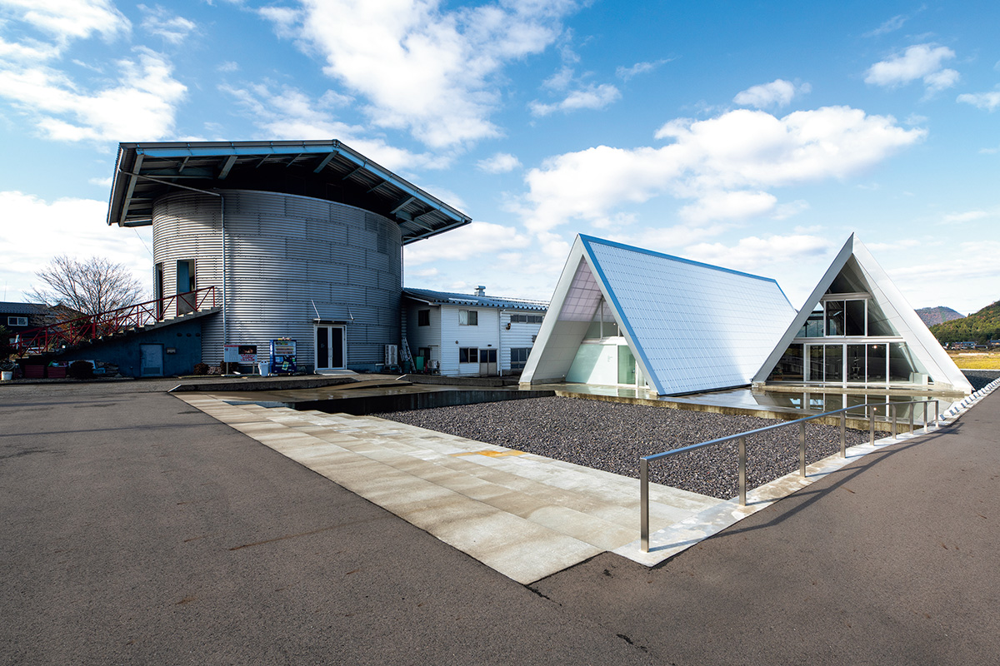
Ножам Этидзэн-ути-хамоно около 700 лет, но самое интересное в них происходит в 2026 году. В Takefu Knife Village пятнадцать мастерских работают в одном цеху без стен, и любой гость может посмотреть, как рождается клинок.
Ремесло
Семь веков ножей Этидзэн
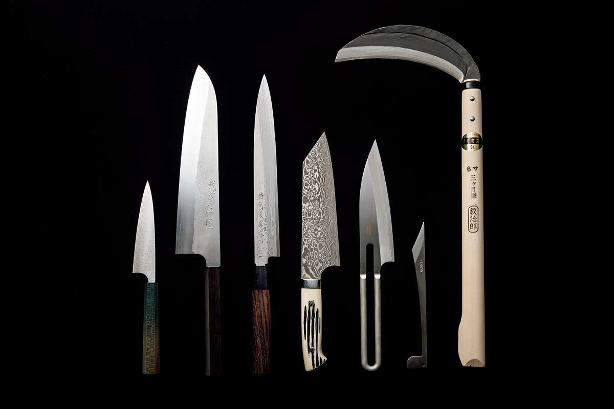
В Этидзэне когда-то располагалась провинциальная управа и заходили корабли китамаэбунэ, которые возили товары вдоль побережья Японского моря. История местных ножей началась около 700 лет назад: мастер мечей из Киото Куниясу Тиёдзуру пришёл сюда в поисках воды, в которой можно закаливать хорошие клинки. Кроме мечей он ковал серпы для крестьян из окрестных деревень, и серпы Этидзэн со временем стали самыми массовыми в Японии.
Позже Этидзэн превратился в край кухонных ножей. Но в XX веке всё решали оптовые торговцы, и кузнецы не могли даже выбить своё имя на клинке. Затем распространилась нержавеющая сталь, появились штампованные ножи массового производства, и ручная ковка оказалась в трудном положении: спрос падал, мастерские закрывались одна за другой.
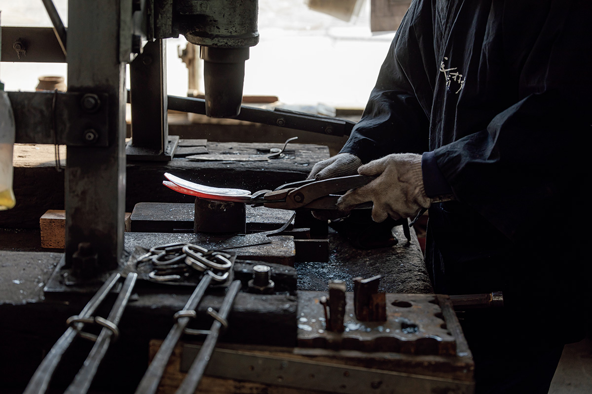
История
Десять мастеров и дизайнер
Переломить ситуацию решили десять мастеров, у каждого из которых была своя маленькая кузница. В 1983 году они объединились с дизайнером Кадзуо Кавасаки, уроженцем Фукуи, и создали собственную марку Takefu Knife Village. Дизайнер продумывал не только удобный и красивый нож, но и упаковку. Для ремесленников того времени это был смелый шаг. После долгих проб появился нож из нержавеющей стали «Креус», который покупают и через сорок с лишним лет.
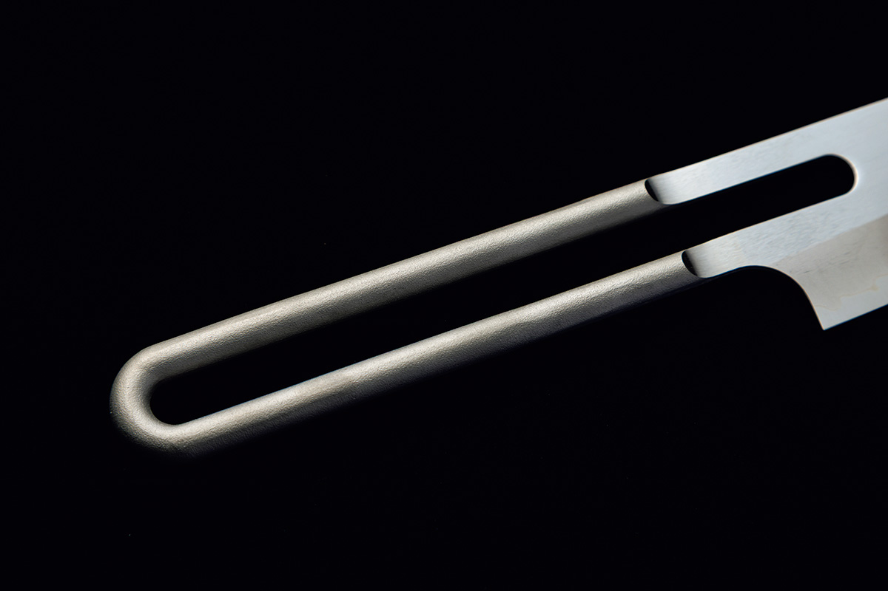
Вскоре мастера создали кооператив и построили здание для общей мастерской. Им было по 40–50 лет, и каждый взял в долг 30 млн иен, поставив всё на будущее ремесла.
«Среди семи принципов, которые отцы записали при основании, есть такой: „Иногда традицию нужно предать“. Если держаться только за старые материалы и способы, ничего нового и удобного не сделаешь»
Юдзи Тотани, Sharpening four
Деревня
Пятнадцать мастерских в одном цеху
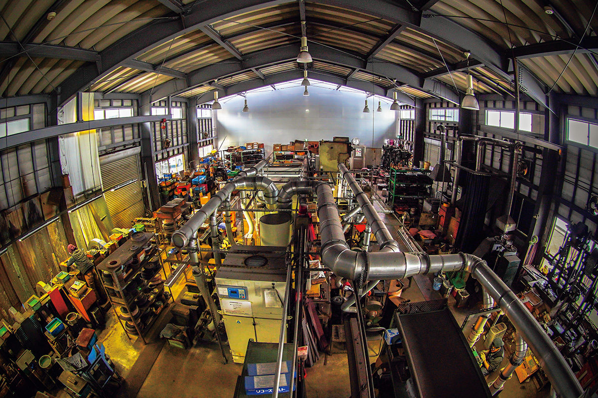
В 2026 году в Takefu Knife Village работали 15 компаний и около 50 мастеров. Они трудятся бок о бок под одной крышей, в цеху без перегородок, и это необычное зрелище. Каждый может перенять удачный приём соседа и тут же поправить то, что получается хуже. Из этих ежедневных мелочей и складывается уровень всего ремесла.
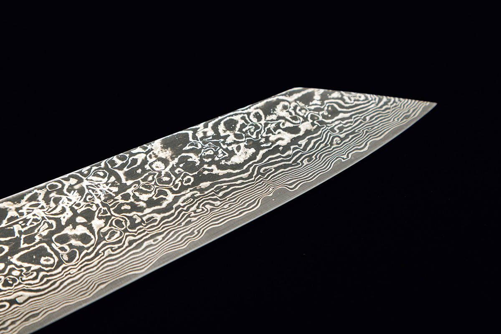
«Мы приняли дело от старших и вошли в новую фазу. Работать в одном месте и при этом развивать каждый свой почерк. И чтобы молодых, которые мечтают об этой профессии, становилось больше»
Юдзи Тотани, Sharpening four
Ножи деревни ценят шеф-повара за границей, и в мастерскую каждый день приезжают гости из Японии и других стран. Здесь собран весь передний край Этидзэн-ути-хамоно: ремесло, которое бережёт традицию и при этом не боится её перерасти.
Takefu Knife Village
- Адрес
- префектура Фукуи, город Этидзэн, Ёкава-тё, 22-91
- Телефон
- +81 778-27-7120
- Часы работы
- 9:00–17:00
- Выходные
- нерегулярные
Мастерская
Sharpening four: нож для первой кухни
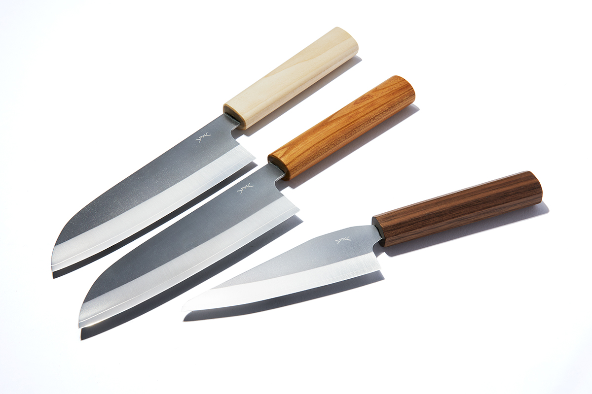
Юдзи Тотани работает точильщиком в Takefu Knife Village. Приняв мастерскую от отца, он дал ей новое имя: Sharpening four. Новая марка HATSU появилась после знакомства с дизайнером продуктов.
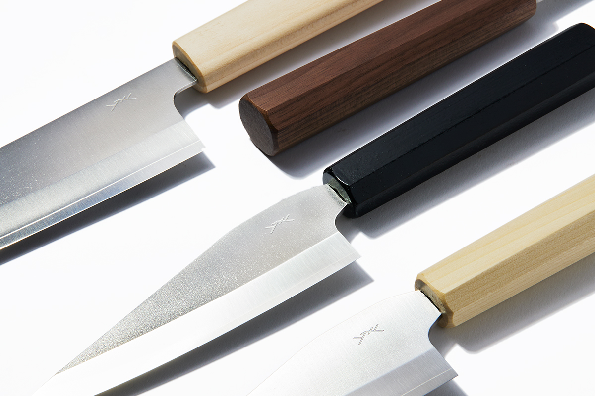
«Для главной серии HATSU мы решили: только простота. Хочется, чтобы ими пользовались и те, кто только начинает готовить»
Юдзи Тотани, Sharpening four
Традиционное ремесло в современной форме хорошо смотрится на кухне. Вот три ножа серии и их цены в 2025 году.
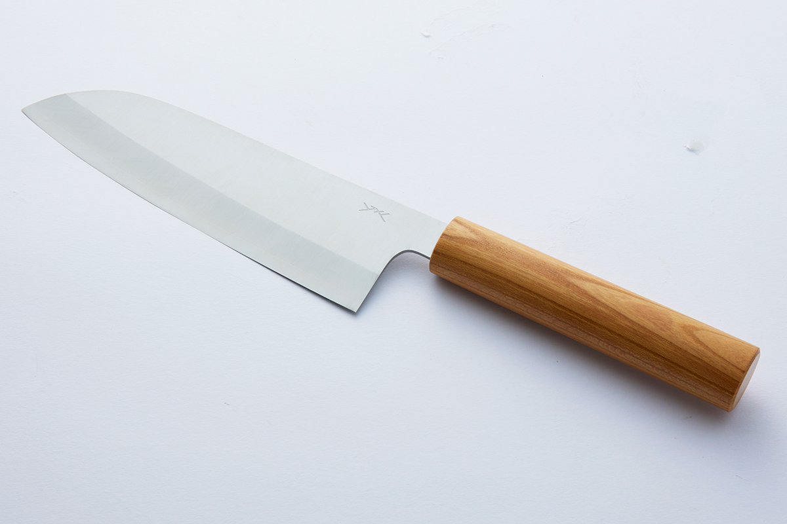
Рукоять второго ножа сделана из японской магнолии.
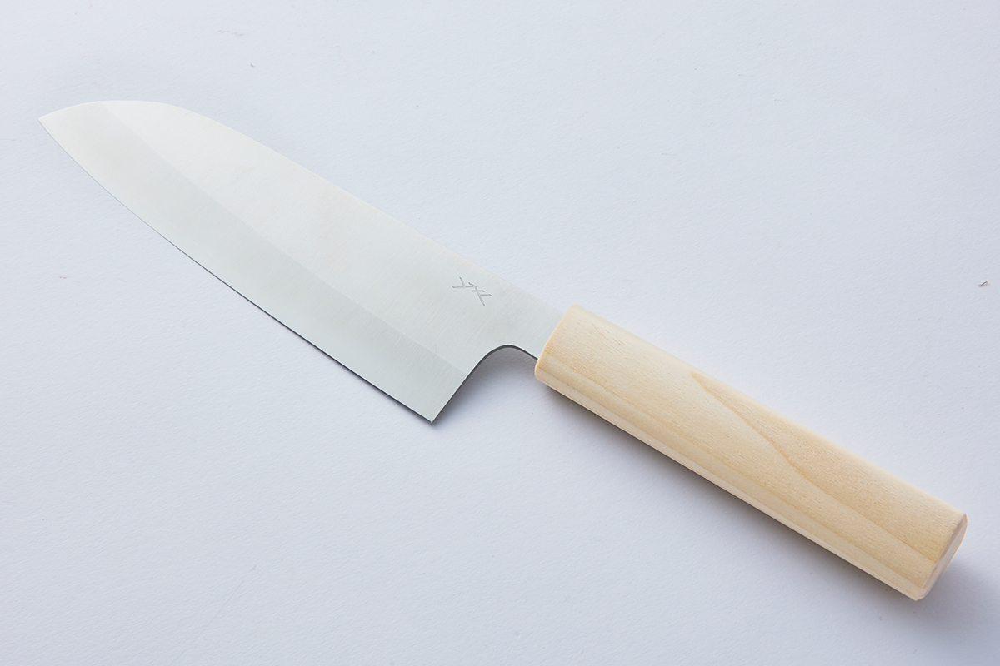
Третий нож серии самый компактный.
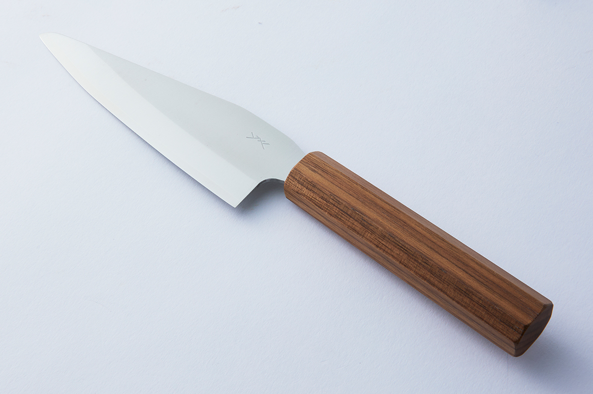
Ножи Sharpening four можно купить и онлайн, в официальном интернет-магазине.
Фото: Юко Окосо, Сихо Акияма.